1
Descubrimiento
Contexto y objetivoEntendimiento del problema, la decisión a mejorar, los usuarios involucrados y el resultado esperado.
Power BIQlik CloudLooker StudioSQL Server
Data & Analytics
Patrones Lab es un laboratorio de análisis de datos aplicado a fenómenos cotidianos y reales.
Aquí se trabajan proyectos independientes construidos a partir de datos públicos, con foco en detectar patrones, describir comportamientos y comunicar los hallazgos con su contexto.
El objetivo es plantear preguntas, preparar datos, construir análisis claros y generar resultados visuales.
Entendimiento del problema, la decisión a mejorar, los usuarios involucrados y el resultado esperado.
Identificación de las fuentes disponibles, su origen, actualización, confiabilidad y principales limitaciones.
Organización, limpieza y combinación de datos para construir una base consistente y usable.
Desarrollo del análisis, modelo o dashboard necesario según el objetivo definido.

PlotlyPower BIQlik CloudRevisión de la coherencia, estabilidad y alineación de los resultados con la realidad del negocio.

SPSS ModelerDocumentación del trabajo final, automatización de procesos recurrentes y consideración del feedback para mejoras futuras.
Selección de proyectos aplicados con datos públicos, metodología y resultados visuales. Usá los filtros para navegar por disciplina, herramienta o tipo de entrega.
Análisis de tráfico aéreo en España con datos públicos de AENA, con foco en volúmenes, patrones por aeropuerto y diferencias entre categorías.
Análisis exploratorio del alojamiento Airbnb en Londres con foco en precio, categorías, reseñas y patrones territoriales.
Análisis de viajes de taxi en Chicago para estudiar duración, demanda, distribución geoespacial y patrones operativos.
Clasificación supervisada de anuncios relativamente caros o baratos dentro de cada tipo de alojamiento.
Dashboard interactivo en Looker Studio para explorar viajes de taxi en Chicago, indicadores operativos, patrones horarios y recorridos pickup-dropoff.
Modelo probabilístico de Peligro Esperado en el fútbol con datos públicos de StatsBomb. Se estima la probabilidad de gol en las próximas 5 jugadas.
✅ publicado
Clustering no supervisado con K-means para la detección de fraudes con tarjetas de crédito.
✅ publicado
Clasificación supervisada mediante regresión logística para la detección de fraude con tarjeta de crédito.
✅ publicado
Clustering no supervisado con DBSCAN para identificar posibles fraudes con tarjeta de crédito.
Entrar al proyectoAnálisis de viajes de taxi en Chicago con foco en ubicación geográfica, movimientos entre puntos, predominios de zonas y rutas.
Dashboard interactivo en Power BI para explorar reproducciones en Spotify y analizar canciones, artistas y álbumes que se encuentran en el Top 250 en cada país.
Para oportunidades profesionales, colaboración analítica o proyectos de BI · ML · Dashboards.
correo: encontrandopatrones@gmail.com
Escribime y te responderé a la brevedad.